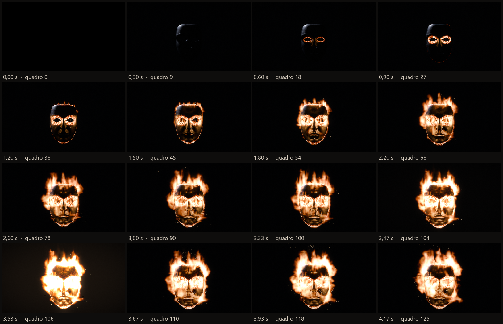
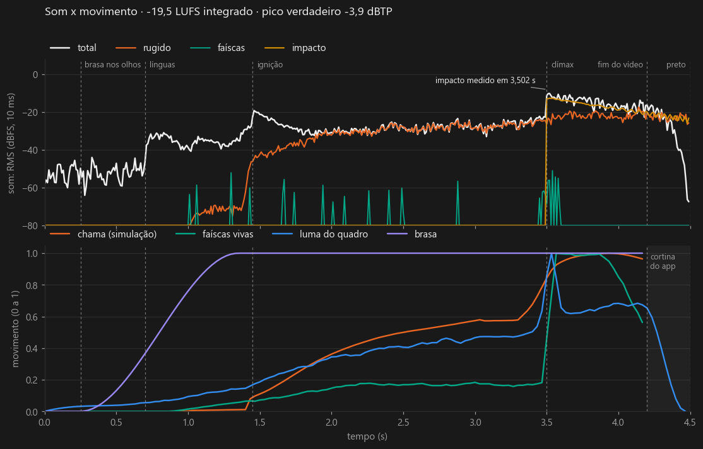

Máscara em chamas
Rascunho de abertura de batalha para aprovar. Mesmo formato da "Armaduras despertam": vídeo de 4,2 s a 30 fps, 1280x720, e o app fecha a cortina em 0,3 s. Fogo e fumaça de simulação no Blender, som sintetizado.
Folha de contato
16 quadros do vídeo final, com o tempo embaixo de cada um.

Som e movimento
Envoltória do som em cima e as curvas da animação embaixo, no mesmo eixo de tempo. Medir não é ouvir: os números conferem volume, pico e sincronia; o timbre só o ouvido decide.

Créditos
Modelo 3D: “Baldwin IV's mask”, de ibuki123 (Sketchfab), licença CC BY 4.0. Modificado: posto em pé, reescalado, cor escurecida e brasa acrescentada no material.
Fogo, fumaça, faíscas, luz e som feitos por script, sem asset de terceiros.
A máscara é a do rei Balduíno IV do filme Kingdom of Heaven: a licença cobre o modelo, não o figurino do filme.